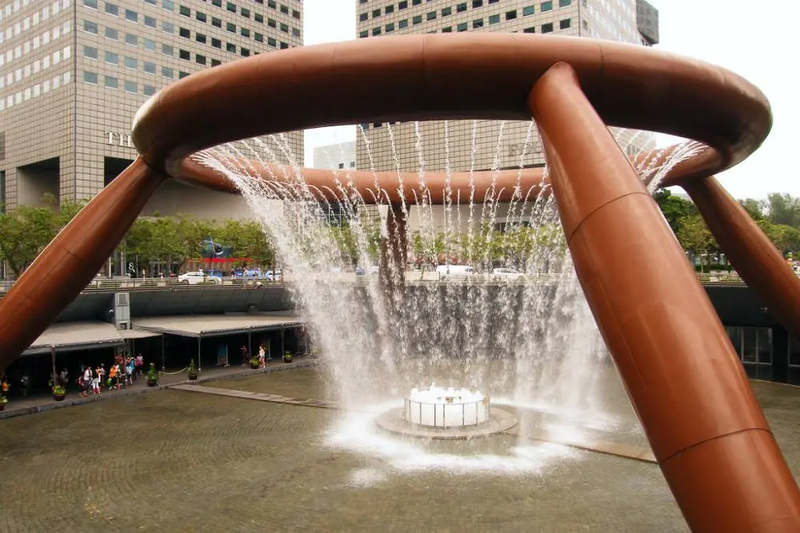
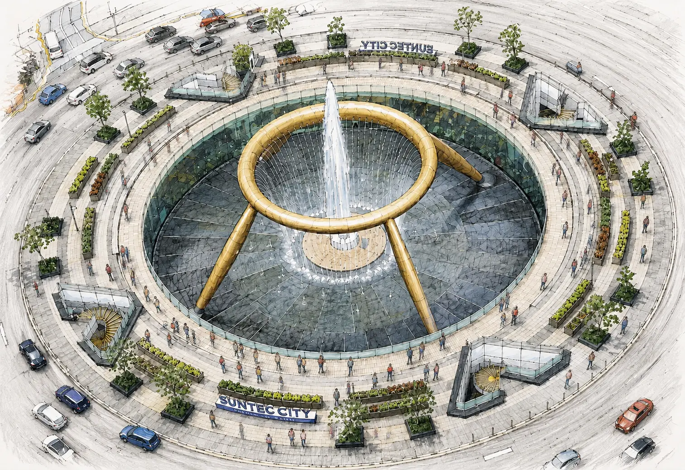
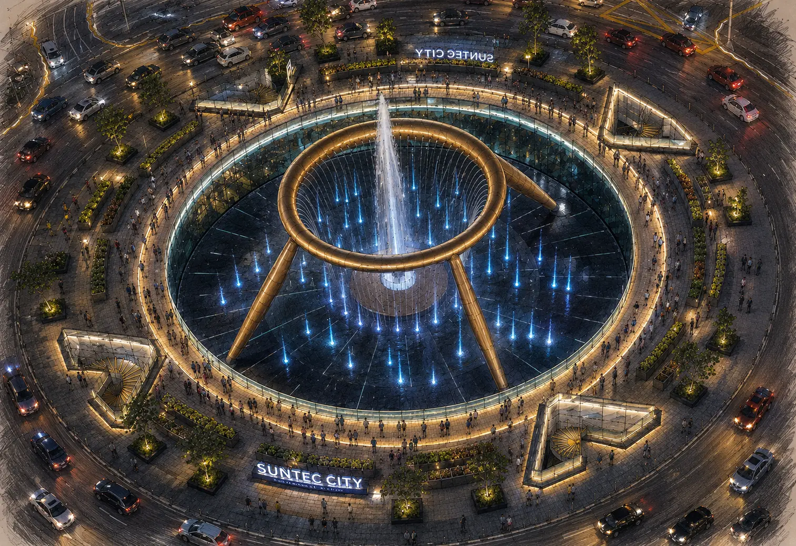
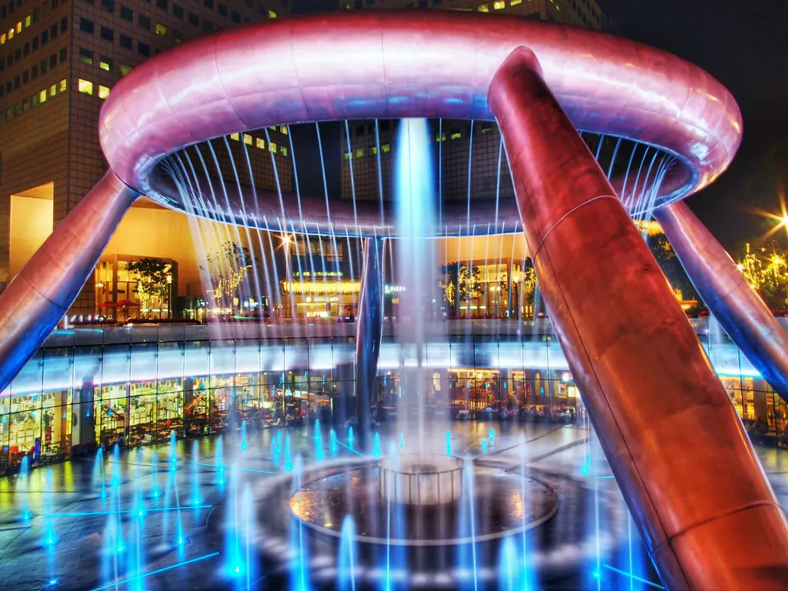
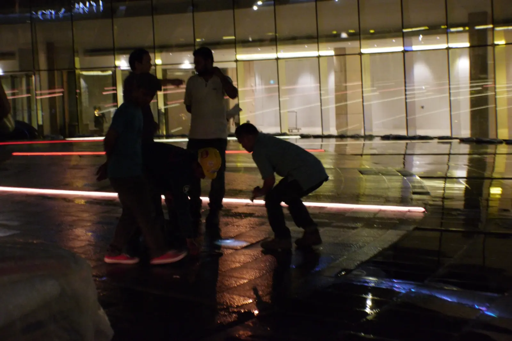
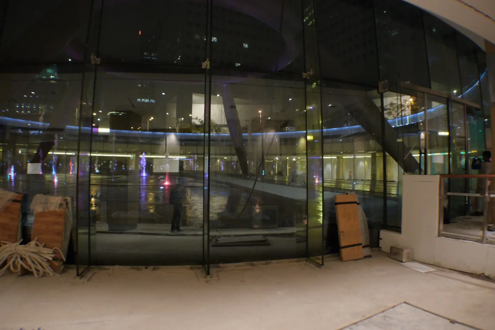
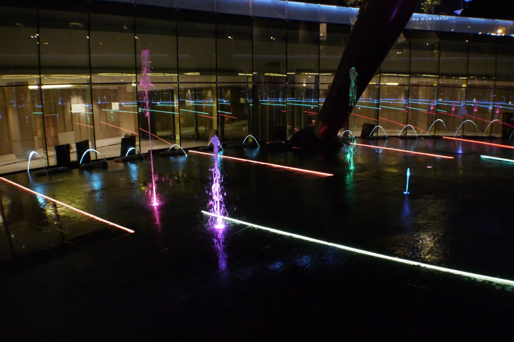

SINGAPORE · MUSICAL FOUNTAIN RENOVATION
Suntec
Fountain of Wealth
Reimagining an icon as a programmable musical experience—while retaining the landmark ring, supporting structure and underlying water infrastructure.
EXISTING CONDITION
The original fountain before renovation.

PROPOSED TRANSFORMATION
Reimagining the landmark through water, light and music.

DESIGN INTENT
New vertical jets and laminar jumping jets introduce movement and rhythm around the existing centre and ring. RGB lighting extends the performance after dark, while revised paving gives the surrounding surface a more deliberate finish.


ENGINEERING THE RETROFIT
The upgrade introduced local tanks for programmable jets, additional submersible pumps, widened catchments for laminar jets, revised paving and an extended walkpath. The retrofit was planned around the retained main reservoir, steel supports and landmark bronze ring.
FROM CONCEPT TO SITE
Coordinating the performance in real conditions.



MY CONTRIBUTION
Concept and design development, equipment planning, site coordination, installation oversight, and coordination with the fountain programmer when synchronizing the water and lighting sequences with music.